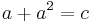
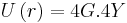

De: La Frikipedia, la enciclopedia extremadamente seria.
De: La Frikipedia, la enciclopedia extremadamente seria. De: La Frikipedia, la enciclopedia extremadamente seria.

|
Este artículo necesita ser ilustrado. Busca una afoto en nuestro depósito de imágenes o donde sea y ponla, pero que no sea pr0n, que se cabrea el señor del adSense y nos corta el grifo de los dólare. Y sin dólare no hay servidor... |
.jpg/150px-muerto_3(2).jpg)
|
Muerto
El autor de este artículo, al parecer, se ha ido a una de sus citas al WC y suponemos que murió como el desdichado de aquí a la izquierda. Así que en su memoria, no seas cabrón, ponle más chorradas al artículo. |
| De la serie rarezas del mundo: | |||
| Polinomio | |||
| |||
| Cosa que representa | Una fiesta de números y letras | ||
| Sirve para | Nada en lo absoluto | ||
| ¿Existe? | Ojalá que no | ||
| Trastorno del cerebro | confundir el abecedario con las tablas de multiplicar | ||
| ¿Es comprensible? | NO | ||
| Hábitat | Clases de Castellano y Matemáticas | ||
| Poder | Mezclar números y letras | ||
| Tipo de rareza | Matematicastellano | ||
| ¿Natural o artificial? | Imaginario | ||
| Nivel de frikismo | Intermedio | ||
| ¿Es abundante? | Intermedia | ||
(Poli= abreviatura de policía; Nomios= cosas que no son tuyas. Polinomios=¿Policías ajenos?) Dícese de una revoltijo de números y letras que debe su existencia a la mezcolanza estúpida entre el abecedario y los números, Estos se asocian en pajeras parejas y se separan por símbolos tales como + ó キ, estas anomalías de los problemarios no tienen otra función más que la de romper los huevos queriendo decir que .
Esta fiesta de números y letras puede usarse desde para suspender un examen como para obtener el resultado de la vida y enseñarle a tu maestro por qué 2+2=Pez

Ejemplo de uno de estos feos, ¿notas algo extraño?
Palabra que posee una significación específica en un ámbito determinado En el caso de los policías ajenos los términos son las pajeras de números y letras separados por los símbolos anteriormente descritos, depende de la cantidad de términos que contenga el poli es más rompebolas resolverlos.
Según sus términos y la cantidad de tukkis que metieron en la cárcel los polinomios se clasifican en:
Para operar a un polinomio necesitas un doctorado, certificado, empapelado, etc. o simplemente un +, un menos, paciencia y conocimientos básicos de la matemática y la literatura.
Para realizar una de estas difíciles gangas rompebólicas y hacer felices a tus padre con buenas notas y así obtener tu Wii Station 360 necesitas:
Bien, una vez que tengas todo esto preparado sigue los siguientes pasos para resolver el polinomio:
A la hora del examen usa una de las técnicas milenarias para aprovar.
| |
|
Álgebra y Aritmética
Estadística
|
Autor(es):